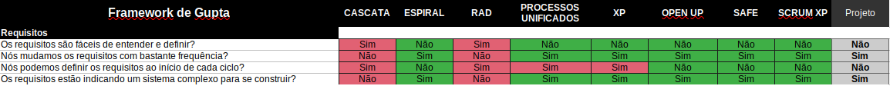
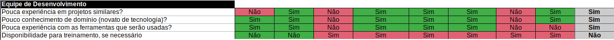
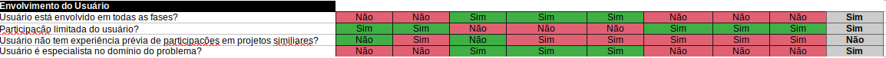
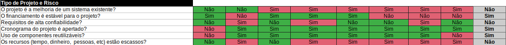
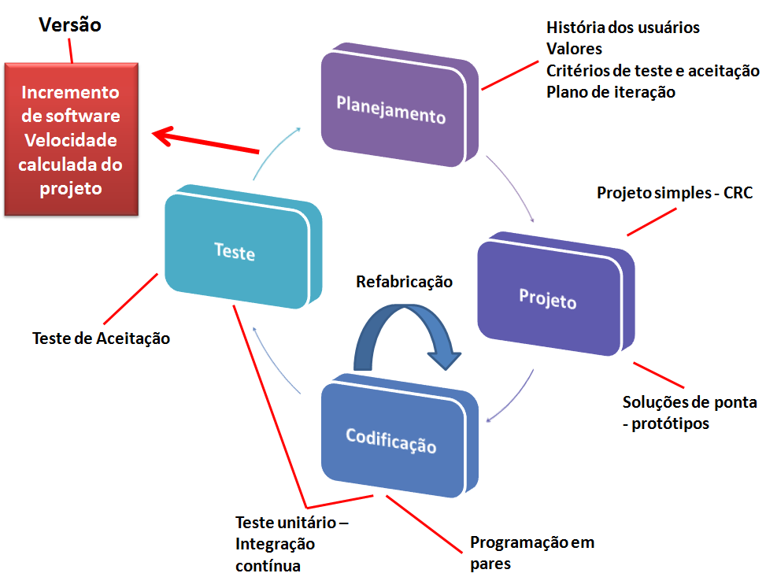
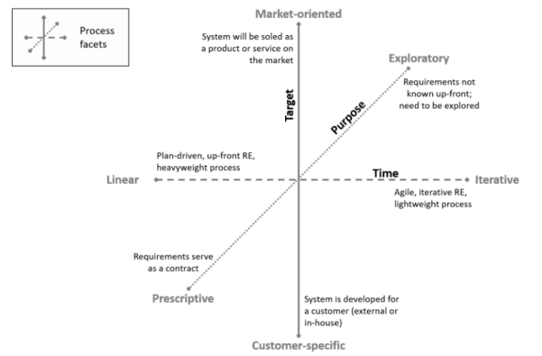
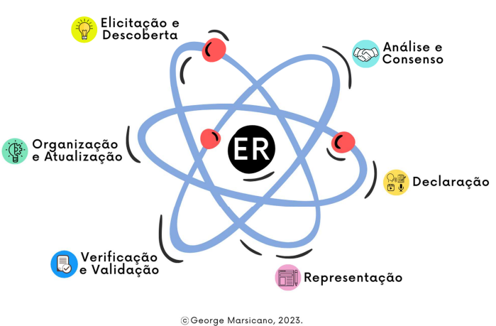
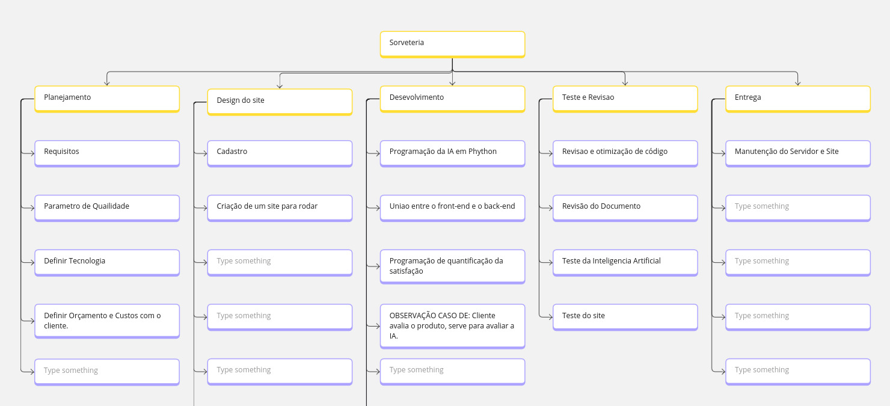

3. Processo de Desenvolvimento de Software
3.1 Metodologia
Baseado na proposta de Gupta (2019), foi respondido um conjunto de questões distintas sobre determinados tópicos para definir a abordagem que melhor se encaixa ao projeto e time. Tópicos norteadores:
- Requisitos
- Equipe de Desenvolvimento
- Usuários
- Tipo de Projeto e Riscos Associados
3.1.1 Requisitos

Figura 1 - Modelo Gupta para requisitos (fonte: Gupta, 2019)
| Pergunta | Nosso contexto |
|---|---|
| Os requisitos são fáceis de entender e definir? | Não |
| Nós mudamos os requisitos com bastante frequência? | Sim |
| Nós podemos definir os requisitos ao início de cada ciclo? | Não |
| Os requisitos estão indicando um sistema complexo para se construir? | Sim |
Conclusão: Em termos de requisitos, destaca-se o modelo espiral, OpenUp, Safe e ScrumXP.
3.1.2 Equipe de Desenvolvimento

Figura 2 - Modelo Gupta para equipe de desenvolvimento (fonte: Gupta, 2019)
| Pergunta | Nosso contexto |
|---|---|
| Pouca experiência em projetos similares? | Sim |
| Pouco conhecimento de domínio (novato na tecnologia)? | Sim |
| Pouca experiência com as ferramentas que serão usadas? | Sim |
| Disponibilidade para treinamento, se necessário | Não |
Conclusão: Em termos de equipe de desenvolvimento, destaca-se o modelo espiral.
3.1.3 Usuários

Figura 3 - Modelo Gupta para usuários (fonte: Gupta, 2019)
| Pergunta | Nosso contexto |
|---|---|
| Usuário está envolvido em todas as fases? | Sim. |
| Participação limitada do usuário? | Sim. |
| Usuário não tem experiência anterior em participação em projetos similares? | Não. |
| Usuário são especialistas no domínio do problema? | Sim. |
Conclusão: Em termos de usuário, destaca-se o modelo RAD.
3.1.4 Tipo de Projeto e Risco Associado

Figura 4 - Modelo Gupta para tipo de projeto e risco associado (fonte: Gupta, 2019)
| Pergunta | Nosso contexto |
|---|---|
| O projeto é melhoria de um sistema existente? | Não |
| O financiamento está estável para o projeto? | Sim |
| Requisitos de alta confiabilidade? | Não |
| Cronograma do projeto é apertado? | Sim |
| Uso de componentes reutilizáveis? | Sim |
| Os recursos (Tempo, dinheiro, pessoas etc) estão escassos? | Não |
Conclusão: Em termos de Tipo de Projeto e Risco Associado, destaca-se o RAD.
3.1.5 Escolha do Processo de Desenvolvimento de Software

Figura 5 - Ciclo XP
Utilizando como base os resultados do framework Gupta, cujo considera baixo conhecimento da equipe, alta participação do cliente no projeto e riscos associados ao projeto, a equipe utilizará seguirá a metodologia ágil utilizando o XP (Extremme Programming).
3.2 Ferramentas
Para a execução dessa metodologia, escolheu-se as seguintes Ferramentas de organização e controle da equipe:
- Gerenciamento de tarefas: GitHub Projects
- Comunicação: WhatsApp, Discord (Reunião de Equipe), Google Meet (Reunião com Cliente)
- Versionamento: GitHub
- Interface de Desenvolvimento: VSCode
- Desenvolvimento de ideias e frameworks da disciplina: Miro
- Prototipação: Figma
3.3 Processos e Procedimentos
3.3.1 Escolhas do Processo de Engenharia de Requisitos

Figura 8 - Faceta da engenharia de requisitos (fonte: MARSICANO, 2023)
Com base nas Facetas do Processo de ER (IREB, 2022), foi definido que é um processo de ER participativo, visto que:
- Alvo é um Cliente Específico;
- O propósito é exploratório;
- Tempo é interativo.
3.3.2 Atividades do Processo de Engenharia de Requisitos

Figura 9 - Atividades da ER (fonte: MARSICANO, 2023).
Para isso, a equipe irá incluir o processo ER na metodologia de desenvolvimento XP da seguinte maneira:
| Atividade | Método | Ferramenta | Entrega | Fase da aplicação |
|---|---|---|---|---|
| Elicitação e Descoberta | Entrevista com o Cliente e Brainstorming | Google Meet, Lean Inception | Documento de Requisitos Funcionais e Não Funcionais | Aplicada na fase de Planejamento |
| Análise e Consenso | Brainstorming SWOT | Jira | História de Usuários | Aplicada na fase de Planejamento |
| Declaração | Critétios de Aceitação | GitHub | Épicos, Tasks, Prazos, MVP | Aplicada na fase de Projeto |
| Representação | Figma | GitHub | Protótipo de Alta Fidelidade | Aplicada na fase de Projeto |
| Implementação | Pair Programming | VsCode, Git | Código Fonte | Aplicada na fase de Codificação |
| Verificação e Validação | Teste de Aceitação | GitHub, Jasmine, PyTest | Relatório de Testes e Validações dos Requisistos | Aplicada na fase de Testes |
| Organização e Atualização | Backlog SAFe | Jira | Relatório do Backlog da semana | Aplicada na fase de Planejamento |
3.3.3 Estrutura Analítica do Projeto
A Estrutura Analítica do Projeto (EAP) é uma ferramenta fundamental na gestão de projetos que tem como objetivo dividir o trabalho a ser realizado em partes menores e mais gerenciáveis. A EAP é estruturada de forma hierárquica, onde o projeto é decomposto em entregas, atividades e pacotes de trabalho, facilitando a organização, o planejamento e o controle de todas as etapas do projeto. Essa decomposição permite uma visão clara e detalhada de tudo o que precisa ser realizado, ajudando a identificar as tarefas necessárias, atribuir responsabilidades e monitorar o progresso, garantindo que todas as partes essenciais do projeto sejam consideradas.
A EAP também desempenha um papel crucial na comunicação dentro da equipe, pois fornece um mapa visual do projeto que ajuda todos os envolvidos a entenderem o escopo e o fluxo de trabalho. Ela é a base para a estimativa de custos, recursos e tempo, além de ser essencial para o gerenciamento de riscos, pois permite identificar áreas críticas e antecipar possíveis problemas. Com uma EAP bem definida, é possível alinhar as expectativas das partes interessadas, melhorar a eficiência do gerenciamento do projeto e aumentar as chances de sucesso na entrega dos objetivos propostos.
 Figura 10 - Estrutura Analítica do Projeto
3.3.3.1. Planejamento:
- Inclui a coleta de Requisitos, definição dos Parâmetros de Qualidade, escolha da Tecnologia, e o Orçamento e Custos com o cliente.
3.3.3.2. Design do site:
- Envolve o Cadastro e a Criação de um site para rodar.
3.3.3.3. Desenvolvimento:
- Foca na Programação da IA em Python, integração entre Front-end e Back-end, e a Programação de quantificação da satisfação.
3.3.3.4. Teste e Revisão:
- Consiste na Revisão e otimização de código, Revisão do Documento, Teste da Inteligência Artificial e Teste do site.
3.3.3.5. Entrega:
- Contempla a Manutenção do Servidor e Site. Cada fase é detalhada em atividades específicas, organizadas de forma hierárquica para facilitar o gerenciamento e execução do projeto.
Histórico de Versão:
| Data | Versão | Descrição | Autor | Revisores |
|---|---|---|---|---|
| 31/07/24 | 1.0 | Criação do documento | Daniel Rodrigues | Jésus Gabriel, Marco Tulio |
| 04/09/24 | 1.1 | Atualização do documento | Jésus Gabriel | Daniel Rodrigues |